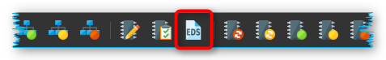
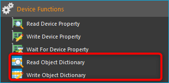
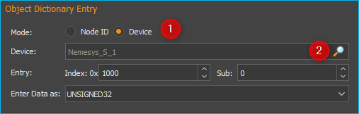

CANopen Tools Plugin
Introduction
This plugin contains tools for accessing and configuring CANopen devices. CANopen is a standardized application for industrial automation solutions, based on CAN. Originally, CANopen was developed to control machine networks. Today, CANopen is used in many fields, including medical equipment, vehicle production, shipping and public transport.
The CANopen profile family is based on a communication profile (communication profile for industrial systems DS-301), which specifies communication mechanisms and their description. The different device types used in automation equipment, such as drives and controllers, are described in device profiles. These device profiles determine the functionality and parameters of standard devices of the respective types. Such standardized profiles form the basis for uniform access to CANopen devices using the CAN bus. This makes it possible to be largely independent from particular manufacturers.
Opening CANopen Tools Project
To open the CANopen Tools Workbench, load the CETONI Elements project
canopentools. To do this, click on the menu item
in the
main menu of the application. Then select the project canopentools in the
project dialog.

The application will restart and you should see the CANopen Tools Workbench:

The View of the CANopen Tools plugin can be displayed by pressing the CANopen Tools ❶ button in the sidebar. The toolbar ❷ contains important functions for accessing devices on the network.
The main part of the CANopen Tools Workbench is the Object Dictionary Editor ❸ for reading or writing individual entries to or from the device object dictionary.
In addition, you can monitor the messages on the CAN bus in real time with the CAN Bus Trace Window ❹.
Toolbar
|
Network scan – searches for connected devices |
|
Resets all devices |
|
Resets communication parameters of all devices |
Starts process data communication on all devices |
|
|
Sets all devices to pre-operational status |
|
Stops communication of all devices |
Saves parameters of selected devices (nodes) to non-volatile device memory |
|
|
Resets all parameters of selected device to factory values |
Assigns EDS file (Electronic Data Sheet) to the selected device |
|
|
Export parameters of the selected CANopen node to a DCF file |
Import DCF file into the selected CANopen node |
|
|
Resets the selected device |
|
Resets communication parameters on the selected device |
|
Starts process data communication on the selected device |
|
Resets selected devices to pre-operational status |
|
Stops communication of the selected device |
{kind=link}
{kind=link}
{kind=link}
{kind=link}
Object Dictionary Editor
What is a CANopen Object Dictionary
The object dictionary forms the central element of the CANopen standard. It describes the complete device functionality of a CANopen device. Each CANopen node implements a local object dictionary. It is basically a standardized and predefined grouping of objects that can be accessed through the network.
Each object in the dictionary is accessed through a 16-bit index and an 8-bit sub index. The entries in the object dictionary make it possible to access the “application objects” of a device, such as input and output signals, device parameters, device functions or network variables, through the network in a standardized fashion:
Index |
Object |
|---|---|
0000h |
Reserved |
0001h-009Fh |
Data Types |
00A0h-0FFFh |
Reserved |
1000h-1FFFh |
Range for communication profile DS-301 |
2000h-5FFFh |
Manufacturer-specific range |
6000h-9FFFh |
Standardized range of the implemented device profile |
A000h-FFFFh |
Reserved |
Simple variables can be accessed directly through the 16-bit index. In case of data structures or arrays, the index addresses the entire data structure. The additional 8-bit sub index allows access to individual elements of a data structure or array.
Index |
Sub Index |
Data Type |
Name |
|---|---|---|---|
1000h |
0 |
UNSIGNED32 |
Device type |
1001h |
0 |
UNSIGNED8 |
Error register |
1018h |
RECORD |
Identity object |
|
0 |
UNSIGNED8 |
Number of entries |
|
1 |
UNSIGNED32 |
Vendor ID |
|
2 |
UNSIGNED32 |
Product code |
|
3 |
UNSIGNED32 |
Revision number |
|
4 |
UNSIGNED32 |
Serial number |
The object dictionary is divided into two sections. The first section contains information regarding the device, such as device identification, manufacturer, etc. as well as communication parameters. The second section describes the specific device functionality.
Overview of Object Dictionary Editor
The object dictionary editor gives you access to the object dictionaries of all connected nodes.

The editor uses a tree-like structure with 3 levels. Level ❶ shows all devices detected during a network scan. If you open a network node, you will see level ❷ with the complete object dictionary of that node and all its dictionary entries. You can access simple variables in this level directly through the index. Complex data structures or arrays have an additional level ❸. Here you access individual elements of an array or data structure, using the sub index. Entries of data structures with sub entries are highlighted in color ❷.
The following overview shows you the structure once again:
 Devices on CAN Bus (level 1)
Devices on CAN Bus (level 1) Simple elements with direct index access (level 2)
Simple elements with direct index access (level 2) Array elements – expand to access the individual elements
Array elements – expand to access the individual elements Data structure – expand to access the individual elements
Data structure – expand to access the individual elements- Individual elements of arrays or data structures
Assigning Device Names
After a network scan, all devices are identified by their unique node number (index column). In the name column you can also assign a description of your choice in the name column to make identification easier.

Using the left mouse key, double-click on the node name field and enter a name of your choice.
Assigning an Electronic Data Sheet (EDS)
The object dictionaries of different nodes contain different entries. After a network scan you will only be shown the standard entries, that are specified according to the CANopen DS301 standard. Device profile specific or manufacturer-specific entries are omitted. In order to access those entries, you will need an EDS-file (electronic data sheet) for your device.
The symbol of the device in the Index column indicates whether a device has already been assigned an EDS file.
|
CAN node without EDS file |
|
CAN node with EDS file assigned |
If you want to know which EDS file has been assigned to a node, simply move the mouse over the node and wait until the help text appears. Here you can see the complete file path of the assigned EDS file.
To assign an EDS-file first select the device in the object dictionary editor by clicking on it. Then click the Assign EDS File button in the toolbar.
As an alternative, you can also open the context menu of the object dictionary editor by doing a right mouse click and selecting Assign EDS File from the menu.

After assigning the EDS-file you will be able to access all device parameters.
Important
Configuration parameters like device names or assigned EDS-files are saved automatically in the project settings of the current project and are restored upon relaunching the application or loading a project.
Tip
Create different projects via main menu : to be able to change quickly between different network configurations.
Reading/Writing Object Dictionary Entries
When you click on an object dictionary entry the respective entry is imported from the device and the values filled into the Data and Data (hex) columns.

To write device parameters simply perform a double-click with your left mouse button on the Data or Data (hex) column of the object dictionary entry you wish to modify.

After double-clicking, you can modify the values of the cell. When you press the enter key or click on a different cell, the value is accepted and transferred to the device.
Tip
You can only write object dictionary entries whose access type is set to read/write (rw) or write only (wo).
Important
Unless you saved the modified data to the non-volatile device memory using the Save Parameters function, any parameter modifications will be lost when the device is turned off or reset.
Permanently saving / restoring Device Parameters
Any object dictionary entries you created will be lost when the device is turned off or reset. In order to permanently save device parameters to the non-volatile device memory, you have to click on Node: Store Parameters in the toolbar (see image below) after writing the entry.

If you want to restore a device’s default parameters (factory settings), click on Node: Restore Default Parameters in the toolbar.

All parameter modifications saved on the device will be lost and replaced by the default parameters.
Exporting Device Parameters to DCF File
You can export the complete configuration of a CANopen node to a standardized file format as a DCF (Device Configuration File) file.
Important
A DCF file is an EDS file with the current values of each object. This means that the DCF export can only be performed for nodes with an assigned EDS file.
To start the parameter export, simply right-click on the node or on an object directory entry of the node and select from the context menu.

Importing Device Parameters from DCF File
You can import the complete configuration of a CANopen node from a DCF file.
Important
A DCF file is an EDS file with the current values of each object. This means that the DCF import can only be performed for nodes with an assigned EDS file.
To start the parameter import, simply click with the right mouse button on the node or on an object directory entry of the node and then select the menu item in the context menu.

After the import, the imported parameters are not yet permanently stored in the non-volatile memory of the device. This means that you have to save the parameters explicitly using the menu item .
CAN Bus Trace Window
You can use the CAN Bus Trace View to monitor and record messages on the CAN bus in real time.

The Trace View basically consists of the toolbar ❶ and the list of recorded messages ❷.
Toolbar
|
Starts the recording of CAN messages |
|
Stops the recording of CAN messages |
|
Deletes all recorded messages from the trace list. |
|
Activates the recording of messages from all CAN nodes |
Only the messages of the currently selected node are recorded. |
|
Enables / disables automatic scrolling to the last recorded message |
{kind=link}
{kind=link}
The Trace-List
In the trace list, all messages are displayed in chronological order, i.e. older messages are at the top of the list and more current messages are at the bottom of the list. The last entry in the list is always the last recorded message.
If automatic scrolling is activated, the display is always scrolled to the last recorded message. If you want to view older messages during recording, deactivate automatic scrolling.
The different types of CANopen messages are displayed differently colored in the list to increase clarity. The following colors are used:
Not colored - PDO messages
Blue - Network management messages (NMT), Bootup messages and messages for node monitoring (Heartbeat & Node Guarding)
Yellow – SDO messages
Red – Emergency messages
You can toggle whether you want to record the messages of all nodes or just the messages of a single node. If you activate recording for a single node, only the messages of the node selected in the Object Dictionary Editor are recorded.
To record messages from another node, you must select the other node in the Object Directory Editor. Then activate the recording for all nodes and then reactivate the recording of a single node.
CANopen Script Functions
The CANopen Tools Plugin provides functions for the Scripting System to read and write object dictionary entries of connected CANopen devices. The corresponding functions can be found in the Device Functions category:
Read Object Dictionary

This function allows you to read an object dictionary entry and save the read value in a script variable. Use Mode ❶ to select whether you want to use the CANopen node ID (Node ID) to access the device or whether you want to access the device via its device name.

If you have selected Node ID for Mode, enter the node number of the CANopen device in the Node ID ❷ field. For Entry ❸, select the object dictionary entry to be read. This consists of Index (hexadecimal) and Sub Index (decimal). Then select the data type of the entry at ❹. Finally, enter the name of the variable in which the read value is to be saved in the variable field ❺.
If you have selected the option Device ❶ in Mode (figure below), click on the magnifying glass icon ❷ to select a device:
Write Object Dictionary
{kind=link}
By using this function you can write a value into an object dictionary entry of a CANopen device. In the field Data to be written ❶ enter the value to be written into the object dictionary entry. Alternatively, you can enter the name of a script variable to write its value into the object dictionary.

In the Object Dictionary Entry area, you specify the object dictionary entry of a particular device to be written. Details on this can be found in the documentation for the script function Read Object Dictionary.